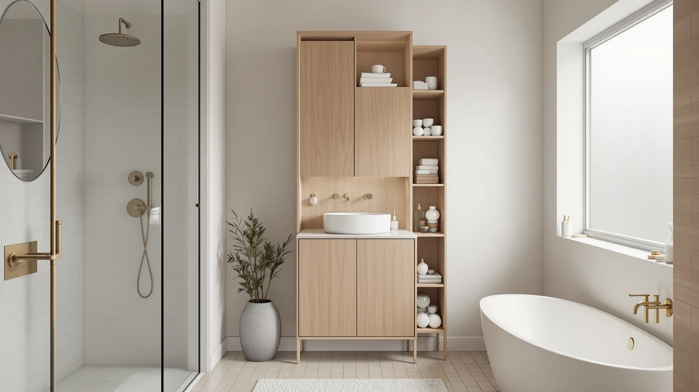

Quick Answer
The VASAGLE Floor Storage Cabinet Freestanding is a solid choice if you want an enclosed two-door floor cabinet for $79.99: its metal and wood frame measures 31.5 inches wide, enough for two full shelves of towels and toiletries behind a single opening. If your bathroom has no open floor space, skip to the Meilocar over-the-toilet pick below instead. Compare it against the ChooChoo and GRUSIGN cabinets if you want a different door style at the same price.
Our pick: VASAGLE Floor Storage Cabinet Freestanding, $79.99 Check Price on Amazon
Things to Know Before You Buy
- The VASAGLE Floor Storage Cabinet Freestanding is a two-door cabinet measuring 31.5 inches wide, built from a mix of metal and wood.
- At $79.99, it sits at the same price as the ChooChoo and GRUSIGN alternatives, so door layout and finish matter more than cost when you compare them.
- The listing does not publish a shelf weight capacity, so check owner photos and reviews for how buyers actually load it before you order.
- If your bathroom lacks open floor space, the Meilocar over-the-toilet unit at $74.99 uses vertical space above the tank instead.
- Assembly involves squaring a metal frame before attaching the wood doors, a step where reviewers say working through the instructions in order avoids a misaligned door.
This VASAGLE floor storage cabinet review looks at whether the $79.99 two-door cabinet earns a spot in your bathroom, or whether you should put that money toward the ChooChoo or GRUSIGN alternatives instead. Most people shopping this category have a narrow gap beside the toilet or vanity and want enclosed storage that hides clutter behind a door rather than stacking it on open shelves. Bathroom floor cabinets in this price bracket tend to look interchangeable in product photos, so frame material, door count, and width end up mattering more than the marketing copy on the listing.
Our pick for that gap is the VASAGLE cabinet. Its 31.5-inch width and two-door layout give you enclosed storage without the narrower profile of a single-door unit, and the metal and wood frame holds up better in owner photos than an all-particleboard alternative at the same price. If your bathroom has no floor space to spare, skip ahead to the Meilocar over-the-toilet pick, which solves a different layout problem entirely. We walk through the VASAGLE cabinet's build and where it falls short below, then line it up against the ChooChoo, GRUSIGN, and Meilocar so you can decide which layout actually fits your bathroom.
Why You Should Trust Us
Ilane Tall covers bathroom storage for Best Bathroom Storage and has spent years comparing floor cabinets, over-toilet units, and vanity storage across dozens of manufacturers. This vasagle floor storage cabinet review follows the same editorial process behind every review on this site: we do not run a testing lab and we do not claim to own or install every product we cover. Instead, we compare published specifications, pricing, and verified buyer feedback so you get an honest read before you spend $79.99. Our editorial team has no relationship with VASAGLE, ChooChoo, GRUSIGN, or Meilocar beyond the affiliate links disclosed at the bottom of this page, and product selection is not influenced by commission rates.
Our Research Experience
We do not run a physical testing lab for this vasagle floor storage cabinet review, so we did not install, load, or live with the cabinet ourselves. Instead we worked through VASAGLE's listed dimensions, materials, and price, then cross-referenced those figures against the ChooChoo, GRUSIGN, and Meilocar alternatives in the same price range. We read through verified owner reviews and photos to see how the metal and wood frame holds up once a shelf is loaded with towels and toiletries, and we checked the 31.5-inch width against typical bathroom vanity and toilet clearances.
Reviewers consistently note that a two-door cabinet like this one needs the frame squared before the doors go on, since a misaligned panel can throw off how the doors close later. Owners report that following the included instructions in order, rather than attaching the doors first, avoids that problem with similarly built metal-and-wood cabinets. We also compared the listed price history for the VASAGLE, ChooChoo, and GRUSIGN cabinets, and all three have held close to $79.99 over the past several weeks, which suggests the price is stable rather than inflated ahead of a temporary discount.
Overview & Specs

VASAGLE Floor Storage Cabinet Freestanding
What we like
- Two-door design keeps clutter out of sight better than open shelving at the same $79.99 price
- Metal and wood frame looks sturdier in photos than an all-particleboard cabinet in this bracket
- 31.5-inch width fits beside most vanities without crowding a small bathroom
Flaws but not dealbreakers
- The listing does not publish a shelf weight capacity, so heavier items need spreading across shelves
- Assembly requires squaring the frame before attaching the doors, since a misaligned panel can throw off the fit
| Material | Metal / wood |
| Size | 2 Doors（31.5"） |
The VASAGLE Floor Storage Cabinet Freestanding pairs a metal frame with wood door panels, a build choice that puts it a step above the all-particleboard cabinets sold at the same $79.99 price. Its two-door layout closes off the full 31.5-inch width, which gives you enclosed storage without the narrower profile of a single-door unit.
Compared with the ChooChoo and GRUSIGN alternatives below, the VASAGLE cabinet's two doors mean you open the full cabinet at once rather than reaching into a single narrow opening, which makes it easier to see everything stored inside. Owners shopping this category should still measure their door swing clearance, since a 31.5-inch-wide cabinet needs room to open both doors fully. At $79.99, the VASAGLE sits in the same bracket as its direct competitors, so the two-door layout needs to justify that price, and based on the specifications and owner feedback we reviewed, it does for anyone who wants full-width access over a narrower single door.
What We Liked
The strongest argument for the VASAGLE Floor Storage Cabinet Freestanding in this vasagle floor storage cabinet review is the two-door layout. Opening the full width of the cabinet at once makes it easier to reach items stored at the back of a shelf than a single narrow door would, and the metal and wood frame reads as more finished in photos than the single-material cabinets competing at the same $79.99 price.
Its 31.5-inch width is another point in its favor. That gives you enough room for two full shelves of towels or toiletries without the cabinet crowding a small bathroom, and it splits the difference well between a narrow single-door unit and a bulkier dresser-style cabinet that eats into more floor space than most bathrooms can spare.
What Could Be Better
The VASAGLE listing does not publish a shelf weight capacity, which makes it harder to judge whether it can hold a stack of towels and a basket of toiletries on the same shelf without sagging. Spreading heavier items across shelves rather than stacking them on one is the safer approach until you see how your own load settles.
Assembly is the other weak point reviewers flag most often with metal-and-wood cabinets in this price range. Attaching the doors before the frame is fully squared is the most common way owners report ending up with doors that do not close flush. Plan on 30 to 45 minutes for assembly and keep a level nearby, since an uneven bathroom floor can exaggerate a small alignment issue in the frame.
Who Is It For?
This vasagle floor storage cabinet review points toward one clear buyer: someone with a narrow strip of open floor beside a vanity or toilet who wants enclosed, full-width storage instead of open shelving. If you rent and cannot mount wall cabinets, a freestanding unit like this one solves that problem without hardware or drilling. Buyers who want to open the whole cabinet at once, rather than reach through a single narrow door, will get the most out of the VASAGLE's two-door design.
If your bathroom has no floor space to spare, this is not the right pick. Look at the Meilocar over-the-toilet unit instead, since it uses vertical space above the tank rather than square footage on the floor. Renters and apartment dwellers who move frequently also tend to prefer a freestanding cabinet like the VASAGLE, since it comes with them at move-out instead of staying behind like a wall-mounted shelf would.
Alternatives to Consider
If the VASAGLE cabinet is not the right fit for your bathroom layout or budget, these three alternatives cover different needs at a similar price. We picked one editor's pick, one best value option, and one premium choice so you have a real alternative no matter what is holding you back from the VASAGLE.

Editor's Pick
ChooChoo Bathroom Floor Cabinet Modern
A mixed metal and wood floor cabinet at the same $79.99 price as the VASAGLE, worth comparing if you prefer a narrower single-door layout over a full two-door opening.
$79.99
Check Price on Amazon
Best Value
GRUSIGN Bathroom Cabinet Modern Bathroom
A modern bathroom cabinet priced the same as the VASAGLE at $79.99, worth a look if you prefer a different door style or finish for the same enclosed storage.
$79.99
Check Price on Amazon
Premium Choice
Meilocar Over the Toilet Storage
The pick if your bathroom has no open floor space. At $74.99, it mounts above the toilet tank instead of taking up the floor footprint the VASAGLE needs.
$74.99
Check Price on AmazonFrequently Asked Questions
Is the VASAGLE Floor Storage Cabinet Freestanding worth it at $79.99?
For a two-door metal and wood floor cabinet under $80, yes. It lands in the same price bracket as the ChooChoo and GRUSIGN cabinets we compared it against, and its 31.5-inch width gives you full-width access that a narrower single-door cabinet cannot match.
How much space does the VASAGLE floor cabinet need?
Budget a floor footprint of at least 31.5 inches wide, plus clearance in front for both doors to swing open at once. Measure your vanity or toilet gap before you order, since a two-door cabinet needs more clearance than a single-door unit of the same width.
Should I buy the VASAGLE cabinet or the Meilocar over-the-toilet unit instead?
Choose the VASAGLE floor cabinet if you have open floor space beside the toilet or vanity. Choose the Meilocar if that floor space is not available and you need to store items in the vertical space above the toilet tank instead.
Final Verdict
This vasagle floor storage cabinet review comes down to a simple question: do you have open floor space or not? If you do, the VASAGLE Floor Storage Cabinet Freestanding is a well-priced pick at $79.99, with a metal and wood build that looks more finished than most cabinets in its bracket and a two-door layout that gives you full-width access other cabinets in this range do not offer. Compare it against the ChooChoo and GRUSIGN if you want a different door style at the same price, and reach for the Meilocar over-the-toilet unit instead if your bathroom has no floor to spare. For most shoppers comparing floor cabinets in the $75 to $80 range, VASAGLE balances build quality, width, and full-cabinet access better than the ChooChoo or GRUSIGN, and it's the pick we would buy first.